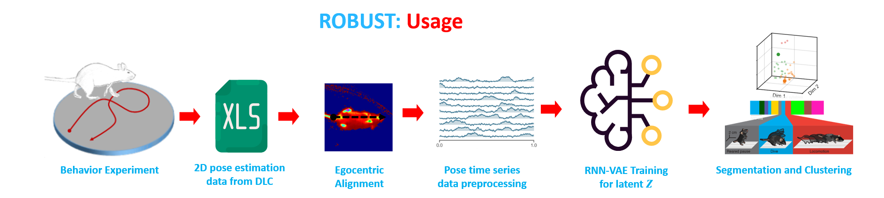

The GUI Tool for Unsupervised Behavior Analysis is an innovative application designed to transform the way researchers understand and analyze animal behavior, specifically focusing on rats. It seamlessly integrates cutting-edge machine learning models with intuitive user interfaces to provide comprehensive behavioral insights.
Background: With the exponential growth in video data, traditional manual analysis of animal behavior becomes time-consuming and is subject to human biases. Automated tools, especially when built on machine learning foundations, offer rapid, unbiased, and deeper insights into animal behavior.
Core Functionality:
Technical Specifications:
Limitations & Future Directions: While the tool has achieved significant milestones in automating behavior analysis, it currently operates on 2D pose estimation. Future iterations may benefit from the integration of 3D pose estimation for richer data and insights. Additionally, newer and state-of-the-art VAE models can be explored to further enhance latent space learning and representation. Features such as post-hoc analysis for advanced visualizations, generation of synthetic neural data based on motion patterns, and other cutting-edge behavioral metrics can be incorporated in subsequent versions.
This work stands at the intersection of behavioral science and AI, offering researchers a powerful and automated solution to unlock complex behavioral patterns in lab animal videos.
